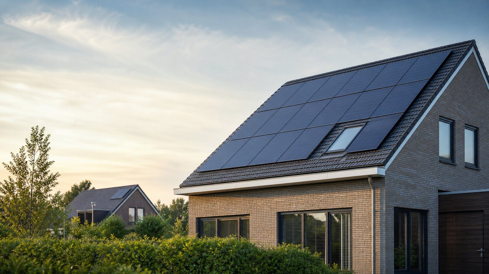
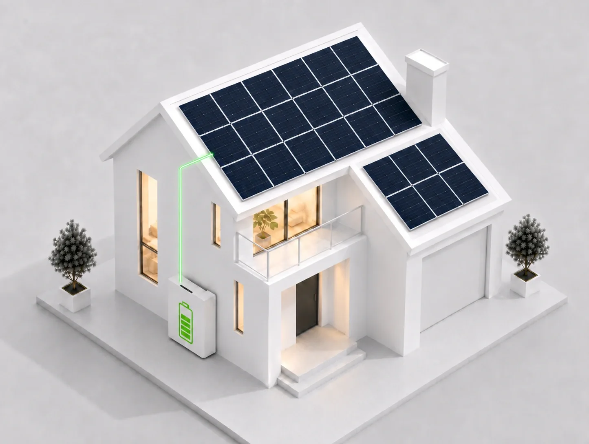
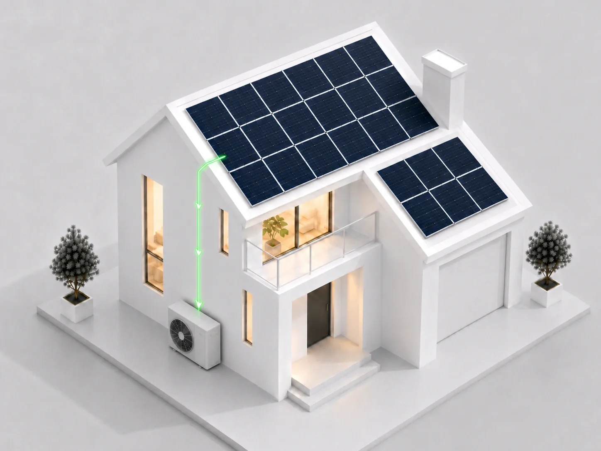

Zonnepanelen leveren het meeste op wanneer het systeem past bij uw verbruik, dak én toekomstige energiebehoefte. Wij berekenen hoeveel zonnepanelen zinvol zijn en zorgen voor een veilige aansluiting op uw elektrische installatie.
NEN 1010
NEN 3140
VCA
Persoonlijk advies
Waarom zonnepanelen?
Een goed ontworpen installatie benut uw dak voor de apparaten die u nu en later elektrisch gebruikt.
Lagere energiekosten
Direct gebruikte zonnestroom hoeft u niet bij uw energieleverancier in te kopen.
Duurzame energie
Wek elektriciteit op uit zonlicht voor uw woning of bedrijf.
Meer waarde uit uw dak
Gebruik een beschikbaar dakoppervlak voor uw eigen energievoorziening.
Voorbereid op elektrisch wonen
Stem de installatie af op een warmtepomp, thuisbatterij of laadpaal.
Plek voor calculator
Hoeveel zonnepanelen passen bij uw situatie?
Hier komt de zonnepanelencalculator. De rekenmodule zelf is bewust nog niet ingebouwd.
De toekomstige indicatie gebruikt onder meer stroomverbruik, daktype, dakrichting, bestaande panelen en plannen voor een elektrische auto of warmtepomp.
Met Sparky Energies kiest u voor een betrouwbare installateur die verder kijkt dan alleen de zonnepanelen.
Een goede zonnepaneleninstallatie draait niet alleen om het plaatsen van panelen. De installatie moet veilig worden aangesloten, netjes worden afgewerkt en passen bij uw huidige én toekomstige energieverbruik.
Sparky Energies helpt u met eerlijk advies, een veilige installatie en duidelijke uitleg. Wij kijken naar uw dak, verbruik en toekomstplannen, zodat u een zonnepaneleninstallatie krijgt die echt bij uw situatie past.

Haal meer uit uw zonnestroom
Sla overtollige stroom op
Zonder thuisbatterij levert u overtollige stroom terug aan het net. Met een thuisbatterij kunt u deze stroom opslaan en later gebruiken, bijvoorbeeld in de avond of nacht.
Sparky Energies kan uw zonnepaneleninstallatie direct voorbereiden op batterijopslag of een bestaande installatie uitbreiden met een thuisbatterij.

Laad uw auto met zonnestroom
Heeft u een elektrische auto of wilt u binnenkort een laadpaal plaatsen? Dan kunnen zonnepanelen helpen om een deel van uw laadverbruik zelf op te wekken.
Zo zorgen we dat uw zonnepanelen, laadpaal en elektrische installatie goed op elkaar zijn afgestemd.
Gebruik zonne-energie voor het verwarmen van uw woning
Een warmtepomp gebruikt elektriciteit om uw woning te verwarmen. Met zonnepanelen kunt u een groot deel van dit extra stroomverbruik zelf opwekken. Dit maakt uw woning duurzamer en beter voorbereid op gasloos wonen.
Sparky Energies controleert of uw elektrische installatie geschikt is voor deze combinatie en denkt mee over toekomstige uitbreidingen.

Hoe werken zonnepanelen?
Zonnepanelen zetten zonlicht om in gelijkstroom. De omvormer maakt daar wisselstroom van die u direct in uw woning of bedrijf gebruikt. Een overschot gaat via de meterkast naar het net of, als uw systeem daarvoor is ingericht, naar een thuisbatterij. Wij stemmen panelen, omvormer, bekabeling en beveiliging op elkaar af.
Zo werken wij
Van dak- en installatiebeoordeling tot voorstel, montage, controle en uitleg.
U vraagt vrijblijvend advies aan
U vult het formulier in en stuurt eventueel foto’s mee van uw dak, meterkast of huidige installatie.
Wij beoordelen uw situatie
Wij kijken naar uw dak, stroomverbruik, groepenkast en wensen. Vaak kunnen wij op afstand al een goede eerste inschatting maken.
U ontvangt een duidelijke offerte
U krijgt een passend voorstel met duidelijke werkzaamheden, materialen en kosten.
Wij installeren veilig en netjes
Onze installateurs plaatsen de zonnepanelen, sluiten het systeem veilig aan en zorgen voor een nette afwerking.
U krijgt uitleg bij oplevering
Na installatie controleren wij het systeem en leggen wij uit hoe u uw opbrengst kunt volgen.
Veel gestelde vragen over zonnepanelen.
Zijn zonnepanelen nog rendabel na het afschaffen van de salderingsregeling?
Het resultaat hangt vooral af van hoeveel zonnestroom u direct zelf gebruikt, de systeemkosten en de actuele regels en tarieven. Daarom rekenen wij met uw eigen situatie.
Welke financiële regelingen zijn van toepassing?
Regelingen en fiscale voorwaarden kunnen wijzigen. In een voorstel gebruiken we de actuele regels die op uw situatie van toepassing zijn.
Werken zonnepanelen ook bij bewolking?
Zonnepanelen werken ook op bewolkte dagen, maar minder efficiënt. Ze leveren nog steeds stroom, alleen minder dan bij direct zonlicht. Nederland heeft genoeg licht voor goede opbrengsten.
Moet mijn groepenkast worden aangepast?
Niet altijd. We inspecteren uw meterkast en bepalen of een aparte groep, andere beveiliging of uitbreiding nodig is.
Kan ik mijn bestaande zonnepaneleninstallatie uitbreiden?
Zeker. Zonnepanelen bieden de mogelijkheid om later bij uit te breiden. Dit is echter afhankelijk van de beschikbare dakruimte, de omvormer, de groepenkast en uw aansluiting.
Wat gebeurt er bij stroomuitval?
Een standaard zonnepaneleninstallatie schakelt meestal automatisch uit bij stroomuitval. Dit is voor de veiligheid van monteurs en het elektriciteitsnet. Wilt u stroom blijven gebruiken bij uitval, dan is een geschikte thuisbatterij met noodstroomfunctie nodig.
Ontvang uw installatievoorstel
Laat uw dak, verbruik, meterkast en toekomstplannen meenemen in een persoonlijk voorstel.